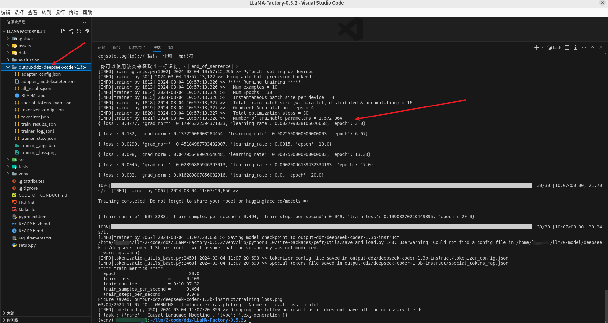

距离开始接触大语言模型已经有几个月的时间了，当初就知道“微调”这个高频词汇，一直没机会弄（一是机器不行，同时也没有比较小的模型；二是感觉应该不好弄，往后拖，先忙别的，哈哈），直到写这篇笔记的前几天才开始尝试，第一次使用
物理环境是：Ubuntu 22.04 + Intel(R)Xeon(R) CPU E5-2699 v4 2.20GHZ + RAM（512GB）
这里下载的是最新（2024-02-27）的发行版：
关于自定义数据集的写法以及一些配置你可以参照官网的：LLaMA-Factory/data/README_zh.md at main · hiyouga/LLaMA-Factory · GitHub
自己整理了几条数据作为测试数据集，文件名称为
点击下载数据集：ddz001.json
还需要在同目录的
# 创建
python3 -m venv venv
# 激活
source ./venv/bin/activate
# 退出虚拟环境
deactivate
pip install -r requirements.txt
由于计算机资源比较紧张，所以下载了个1.3b的，下载路径为：
git lfs install
git clone https://modelscope.cn/deepseek-ai/deepseek-coder-1.3b-instruct.git
CUDA_VISIBLE_DEVICES=0 python src/train_bash.py \
--stage sft \
--do_train \
--model_name_or_path /home/xxx/llm/0-model/deepseek-ai/deepseek-coder-1.3b-instruct \
--dataset ddz001 \
--template deepseekcoder \
--finetuning_type lora \
--lora_target q_proj,v_proj \
--output_dir output-ddz/deepseek-coder-1.3b-instruct \
--overwrite_cache \
--per_device_train_batch_size 4 \
--gradient_accumulation_steps 4 \
--lr_scheduler_type cosine \
--logging_steps 5 \
--save_steps 1000 \
--learning_rate 3e-3 \
--num_train_epochs 30.0 \
--plot_loss \
--fp16
在官网微调示例的基础上，主要对下面的几个参数做了修改

python src/export_model.py \
--model_name_or_path /home/xxx/llm/0-model/deepseek-ai/deepseek-coder-1.3b-instruct \
--adapter_name_or_path output-ddz/deepseek-coder-1.3b-instruct \
--template deepseekcoder \
--finetuning_type lora \
--export_dir /home/xxx/llm/0-model/xxx/xxx-deepseek-coder-1.3b-instruct \
--export_size 2 \
--export_legacy_format False
这里测试的问题是：“javascript 基于时间戳的唯一标识符实现”